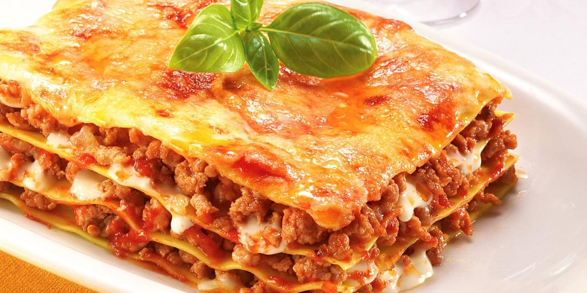

Lasanha de queijo é feito de carne

a lasanha de queijo nao tem carne, mas a lasanha bolanesa sim!
Lasanha de queijo é feito de carne

a lasanha de queijo nao tem carne, mas a lasanha bolanesa sim!
a coxinha de frango e costela tem os mesmos ingrendientes.
Não, os ingrendientes são diferentes.